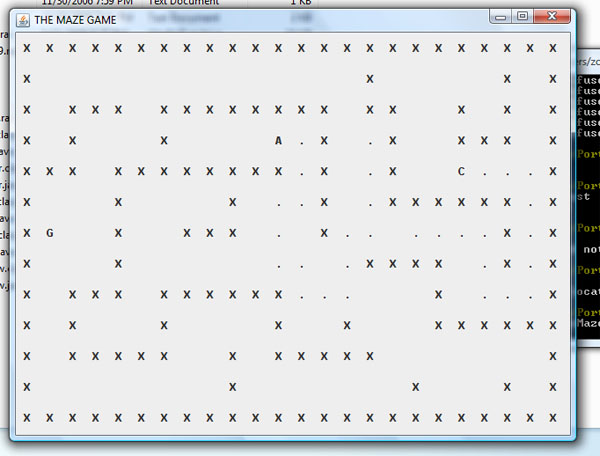

MazeRace Project (Designed using Java in 2006):
This project was designed for CSC108 and is a game much like the Atari 2600 classic Maze Race where two players compete to get to a goal first without backtracking. .

Download Source Code